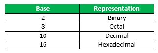
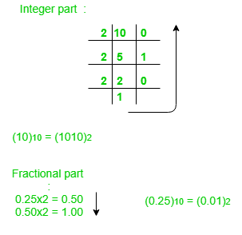
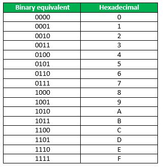

Electronic and Digital systems may use a variety of different number systems, (e.g. Decimal, Hexadecimal, Octal, Binary).
A number N in base or radix b can be written as:
(N)b = dn-1 dn-2 — — — — d1 d0 . d-1 d-2 — — — — d-m
In the above, dn-1 to d0 is integer part, then follows a radix point, and then d-1 to d-m is fractional part.
dn-1 = Most significant bit (MSB)
d-m = Least significant bit (LSB)

How to convert a number from one base to another?
Follow the example illustrations:
1. Decimal to Binary
(10.25)10

Note: Keep multiplying the fractional part with 2 until decimal part 0.00 is obtained.
(0.25)10 = (0.01)2
Answer: (10.25)10 = (1010.01)2
2. Binary to Decimal
(1010.01)2
1×23 + 0x22 + 1×21+ 0x20 + 0x2 -1 + 1×2 -2 = 8+0+2+0+0+0.25 = 10.25
(1010.01)2 = (10.25)10
3. Decimal to Octal
(10.25)10
(10)10 = (12)8
Fractional part:
0.25 x 8 = 2.00
Note: Keep multiplying the fractional part with 8 until decimal part .00 is obtained.
(.25)10 = (.2)8
Answer: (10.25)10 = (12.2)8
4. Octal to Decimal
(12.2)8
1 x 81 + 2 x 80 +2 x 8-1 = 8+2+0.25 = 10.25
(12.2)8 = (10.25)10
5. Hexadecimal and Binary
To convert from Hexadecimal to Binary, write the 4-bit binary equivalent of hexadecimal.

(3A)16 = (00111010)2
To convert from Binary to Hexadecimal, group the bits in groups of 4 and write the hex for the 4-bit binary. Add 0's to adjust the groups.
1111011011
(001111011011 )2 = (3DB)16